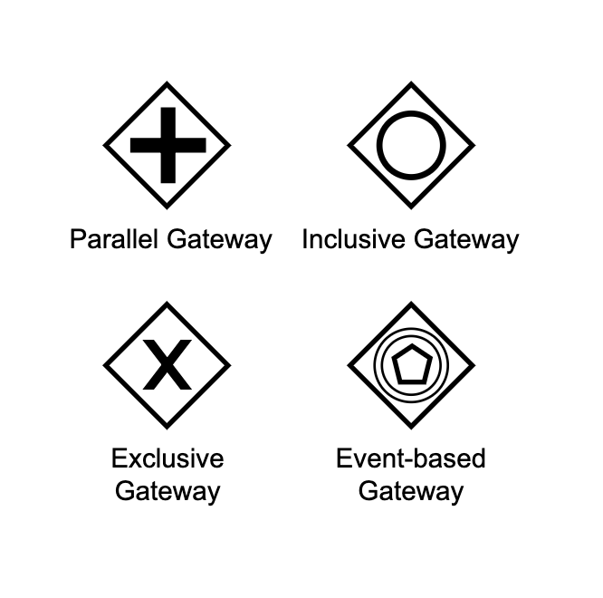

INTRO
The BPMN 2.0 bpe_gateways module provides gateway processing logic (vertices) for managing branching, merging, and parallel execution paths inside process graphs.
GATEWAYS
Supported gateway types:

-
Exclusive (Exclusive Gateway):
Splits the flow choosing exactly one outgoing branch. BPE evaluates the conditions of all outgoing
sequenceFlows in order and fires the first one that returns
true. A default sequenceFlow can be specified in thedefattribute if all conditions evaluate tofalse. - Parallel (Parallel Gateway): Splits the execution into multiple concurrent flows, or acts as a synchronizing merge. When merging, the engine blocks and checks if all incoming flows have reached the gateway (using history logs). Execution proceeds only when all incoming flows have arrived.
-
Inclusive (Inclusive Gateway):
Evaluates all outgoing sequenceFlow conditions and spawns concurrent paths for all conditions that
evaluate to
true. Like the parallel gateway, it acts as a synchronizing merge on incoming paths. - Complex (Complex Gateway): Allows building complex custom branching and merging logic.
ERLANG RECORDS IN XML
BPE parses BPMN XML documents and dynamically compiles conditions from
<bpmn:conditionExpression> tags. The text within the tag is treated as an Erlang term
string and parsed using erl_scan and erl_eval at load-time to yield Erlang
tuples/records.
1. Condition Tuples (evaluated in check_flow_condition/2)
BPE supports multiple condition records defined in bpe.hrl:
A. Compare Condition: {compare, BpeDocParam, FieldIndex, ConstCheckAgainst}
Queries the process environment documents (Proc#process.docs) matching the pattern
BpeDocParam (via bpe_env:find/3). It then verifies if the element at index
FieldIndex of the matched record equals ConstCheckAgainst.
XML Condition Expression Example:
<bpmn:sequenceFlow id="Flow_1"
sourceRef="Task_A"
targetRef="Task_B">
<bpmn:conditionExpression
xsi:type="bpmn:tFormalExpression">
{compare, {payment, [], [], []}, 3, 100}
</bpmn:conditionExpression>
</bpmn:sequenceFlow>Note: The above matches any `#payment{}` document and checks if its third field equals `100`.
B. Service Condition: {service, Fun} or {service, Fun, Module}
Delegates condition evaluation to an Erlang function callback. BPE executes Module:Fun(Proc)
which must return true or false.
XML Condition Expression Example:
<bpmn:sequenceFlow id="Flow_2"
sourceRef="Task_A"
targetRef="Task_B">
<bpmn:conditionExpression
xsi:type="bpmn:tFormalExpression">
{service, check_payment_validity, finance_module}
</bpmn:conditionExpression>
</bpmn:sequenceFlow>C. Gateway Block Condition: {service, gw_block}
A special condition that checks if there is an active blocking rule in Mnesia under the
gw_block table for the gateway source and the process ID. The flow is blocked if a block is
found.
D. Default / Empty Condition: []
An empty condition list evaluates to true by default, causing the sequence flow to
transition immediately.
2. Callback Tuples
Executed when sequence flow transition occurs. Callback records can be written as:
{callback, Fun}: EvaluatesModule:Fun({callback, Source, Target}, Result, PrevState){callback, Fun, Module}: EvaluatesModule:Fun({callback, Source, Target}, Result, PrevState){callback, Fun, Module, Arg}: EvaluatesModule:Fun({callback, Source, Target}, Result, Arg)
XML Callback Example:
<bpmn:sequenceFlow id="Flow_3"
sourceRef="Task_A"
targetRef="Task_B">
<bpmn:conditionExpression
xsi:type="bpmn:tFormalExpression">
{callback, log_flow_transition, logger_helper}
</bpmn:conditionExpression>
</bpmn:sequenceFlow>CALLBACK API FOR ACTIONS
Gateways can invoke actions during flow transitions. Developers implement the action/2
function in their process module:
action({request, From::atom(), To::atom()}, #process{}) -> #result{}
Example implementation:
-module(my_workflow).
-include_lib("bpe/include/bpe.hrl").
-export([action/2]).
% Handle flow request from gateway
action({request, <<"ExclusiveGateway_1">>,
<<"Task_Process">>}, Proc) ->
logger:info("Transition to Task_Process"),
#result{type = reply, reply = ok, state = Proc};
action({request, From, To}, Proc) ->
#result{type = reply, reply = ok, state = Proc}.SCHEDULER IMPLEMENTATION
During the scheduler tick (via bpe:next/1), BPE evaluates gateways using the following
mechanisms:
The Gateway Record
Defined in bpe.hrl, the gateway record extends the base task record fields:
-record(gateway, {
?TASK,
type = parallel :: gate(),
def = [] :: list()
}).Exclusive Gateway Branching
For exclusive gateways, BPE evaluates the outgoing flow conditions in order. If all evaluate to
false and a default flow is specified (via the def field), it transitions
to that default flow. If no default is defined, a runtime error is logged, halting execution:
get_inserted(#gateway{id = Name, type = exclusive,
output = Out, def = []},
_, _, Proc) ->
case first_matched_flow(Out, Proc) of
[] ->
add_error(Proc,
"All conditions evaluate to false in "
"exlusive gateway without default",
Name),
[];
X -> X
end;
get_inserted(#gateway{type = exclusive, output = Out,
def = DefFlow},
_, _, Proc) ->
case first_matched_flow(Out -- [DefFlow], Proc) of
[] -> [DefFlow];
X -> X
end;Parallel & Inclusive Gateway Merging (Join)
When multiple concurrent paths merge into a parallel or inclusive gateway, BPE verifies if all other
incoming paths have arrived before advancing. It checks the execution history logs
(check_all_flows/2) to determine synchronization state. If any path is still pending,
execution of the current thread is halted (returns []):
get_inserted(#gateway{type = Type, input = In,
output = Out},
Flow, ScedId, _Proc)
when Type == inclusive; Type == parallel ->
case check_all_flows(In -- [Flow#sequenceFlow.id],
ScedId)
of
true -> Out;
false -> []
end;
check_all_flows([], _) -> true;
check_all_flows(_, #step{id = 0}) -> false;
check_all_flows(Needed, ScedId = #step{id = Id}) ->
case hist(ScedId) of
#hist{task = #sequenceFlow{id = Fid}} ->
check_all_flows(Needed -- [Fid],
ScedId#step{id = Id - 1});
_ -> false
end.